Differential Loops and TADs#
[1]:
import os
import importlib
import warnings
from collections import Counter
import numpy as np
import pandas as pd
from scipy import stats
from matplotlib import pyplot as plt
import seaborn as sns
from utils.data import DataTree
import snapfish2 as sf
importlib.reload(sf)
[1]:
<module 'snapfish2' from '/Users/redfishhh/Documents/research/MultiplexedFISH/LoopTests/snapfish2/__init__.py'>
[2]:
%reload_ext autoreload
%autoreload 2
[3]:
out_dire = "../123ACElog/050225"
dtree = DataTree("../data")
[4]:
reps = ["rep1", "rep2", "rep3"]
loader = sf.pp.FOF_CT_Loader({
c: dtree["takei_science_2021", "25Kb", c] for c in reps
}, voxel_ratio={"X": 103, "Y": 103, "Z": 250}, obs_cols_add=["Cell_ID"])
celldfs = sf.pp.FOF_CT_Loader({
c: dtree["takei_science_2021", "cell_type", c] for c in reps
}).read_data()
Differential TAD demo#
[5]:
chr_id = "chr3"
adata = loader.create_adata(chr_id)
sf.pp.add_cell_type(adata, celldfs, "Cell_ID", "cluster label")
celltype_dict = {1:'Pvalb', 2:'Vip', 3:'Ndnf', 4:'Sst', 5:'Astro',
6:'Micro', 7:'Endo', 8:'Oligo', 9:'Ex'}
adata.obs["cell_type"] = adata.obs["cluster label"].map(celltype_dict)
[14]:
adata1 = adata[adata.obs["cell_type"] == "Micro"]
adata2 = adata[adata.obs["cell_type"] == "Pvalb"]
caller = sf.tl.TADCaller(tree=False, window=4e5)
fig, axes = plt.subplots(1, 2, figsize=(4.3, 2))
sf.pl.domain_boundary(adata1, caller, ax=axes[0], vmax=120,
title=f"Micro (N={adata1.shape[0]})")
sf.pl.domain_boundary(adata2, caller, ax=axes[1], vmax=120,
title=f"Pvalb (N={adata2.shape[0]})")
fig.savefig(os.path.join(out_dire, "Micro_Pvalb_TADs.pdf"), bbox_inches="tight")
/Users/redfishhh/Documents/research/MultiplexedFISH/LoopTests/snapfish2/utils/eval.py:19: ImplicitModificationWarning: Setting element `.varp['raw_var_X']` of view, initializing view as actual.
adata.varp[f"raw_var_{v}"] = med_sq[i]
/Users/redfishhh/Documents/research/MultiplexedFISH/LoopTests/snapfish2/utils/eval.py:19: ImplicitModificationWarning: Setting element `.varp['raw_var_X']` of view, initializing view as actual.
adata.varp[f"raw_var_{v}"] = med_sq[i]
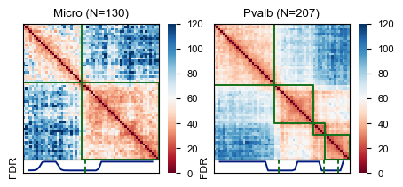
[15]:
caller = sf.tl.TADCaller(tree=False, window=4e5)
res = caller.to_bedpe(caller.call_tads(adata1))
diff = sf.tl.DiffRegion(adata1, adata2)
res_diff = diff.diff_region(res)
fig, ax = plt.subplots(figsize=(2.5, 2))
sf.pl.pairwise_heatmap(
X2=sf.pp.median_pdist(adata1, inplace=False),
X1=sf.pp.median_pdist(adata2, inplace=False),
y="Micro", x="Pvalb", ax=ax, vmax=120
)
sf.pl.add_domain_fdr(ax, res_diff)
fig.savefig(os.path.join(out_dire, "Micro_Pvalb_dTAD.pdf"), bbox_inches="tight")
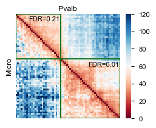
[16]:
res_diff
[16]:
| c1 | s1 | e1 | c2 | s2 | e2 | stat1 | stat2 | level | idx1 | idx2 | stat | pval | fdr | log_fdr | |
|---|---|---|---|---|---|---|---|---|---|---|---|---|---|---|---|
| 0 | chr3 | 7675000 | 7700000 | chr3 | 8525000 | 8550000 | NaN | 1.633124e+16 | 0 | 0 | 28 | 4.183317 | 0.074689 | 0.074689 | -2.594426 |
| 1 | chr3 | 8525000 | 8550000 | chr3 | 9300000 | 9325000 | 1.633124e+16 | NaN | 0 | 28 | 59 | 16.300974 | 0.019503 | 0.039005 | -3.244060 |
[8]:
adata1 = adata[adata.obs["cell_type"] == "Astro"]
adata2 = adata[adata.obs["cell_type"] == "Pvalb"]
caller = sf.tl.TADCaller(tree=True, window=4e5)
fig, axes = plt.subplots(1, 2, figsize=(4.3, 2))
sf.pl.domain_boundary(adata1, caller, ax=axes[0], vmax=120,
title=f"Astro (N={adata1.shape[0]})")
sf.pl.domain_boundary(adata2, caller, ax=axes[1], vmax=120,
title=f"Pvalb (N={adata2.shape[0]})")
fig.savefig(os.path.join(out_dire, "Astro_Pvalb_TADs.pdf"), bbox_inches="tight")
/Users/redfishhh/Documents/research/MultiplexedFISH/LoopTests/snapfish2/utils/eval.py:22: ImplicitModificationWarning: Setting element `.varp['raw_var_X']` of view, initializing view as actual.
adata.varp[f"raw_var_{v}"] = med_sq[i]
/Users/redfishhh/Documents/research/MultiplexedFISH/LoopTests/snapfish2/utils/eval.py:22: ImplicitModificationWarning: Setting element `.varp['raw_var_X']` of view, initializing view as actual.
adata.varp[f"raw_var_{v}"] = med_sq[i]
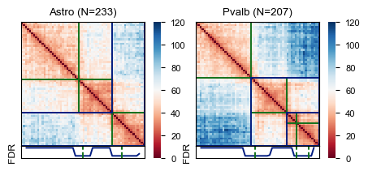
[9]:
caller = sf.tl.TADCaller(tree=True, window=4e5)
res = caller.to_bedpe(caller.call_tads(adata1))
diff = sf.tl.DiffRegion(adata1, adata2)
res_diff = diff.diff_region(res[res["level"]==1])
fig, ax = plt.subplots(figsize=(2.5, 2))
sf.pl.pairwise_heatmap(
X1=sf.pp.median_pdist(adata1, inplace=False),
X2=sf.pp.median_pdist(adata2, inplace=False),
x="Astro", y="Pvalb", ax=ax, vmax=120
)
sf.pl.add_domain_fdr(ax, res_diff)
fig.savefig(os.path.join(out_dire, "Astro_Pvalb_dTAD.pdf"), bbox_inches="tight")
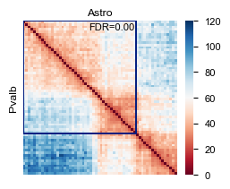
Control type I error rate#
[14]:
loaders = {
c: sf.pp.FOF_CT_Loader(dtree["takei_science_2021", "25Kb", c],
voxel_ratio={"X": 103, "Y": 103, "Z": 250},
obs_cols_add=["Cell_ID"])
for c in ["rep1", "rep2", "rep3"]
}
for k, v in loaders.items():
adata = v.create_adata("chr3")
sf.pp.add_cell_type(adata, celldfs[k], "Cell_ID", "cluster label")
[18]:
dtree["takei_nature_2021", "25Kb", "rep2"]
[18]:
'../data/takei_nature_2021/4DNFIQXONUUH.csv'
[15]:
chr_id = "chr3"
rep1 = loaders["rep1"].create_adata(chr_id)
rep2 = loaders["rep2"].create_adata(chr_id)
diff = sf.tl.DiffRegion(rep1, rep2)
diff.diff_region()
[15]:
AnnData object with n_obs × n_vars = 1615 × 60
obs: 'Cell_ID', 'cluster label'
var: 'Chrom_Start', 'Chrom_End'
uns: 'Chrom'
layers: 'X', 'Y', 'Z'
Differential loop demo#
[7]:
oadata = adata[adata.obs["cell_type"] == "Ex"]
sf.pp.filter_normalize(oadata)
loop = sf.tl.LoopCaller()
loop_res = loop.call_loops(oadata)
loop_df = loop.to_bedpe(loop_res, oadata)
/Users/redfishhh/Documents/research/MultiplexedFISH/LoopTests/snapfish2/utils/eval.py:22: ImplicitModificationWarning: Setting element `.varp['raw_var_X']` of view, initializing view as actual.
adata.varp[f"raw_var_{v}"] = med_sq[i]
[8]:
fig, axes = plt.subplots(1, 5, figsize=(10.5, 2))
sf.pl.pairwise_heatmap(sf.pp.median_pdist(oadata, inplace=False), ax=axes[0], vmax=120, title="Median Distance (nm)")
sf.pl.pairwise_heatmap(loop_res["stat"], ax=axes[1], cmap="flare", vmin=0, vmax=1e2, title="Test Statistics")
sf.pl.pairwise_heatmap(loop_res["fdr"], ax=axes[2], cmap="copper", vmax=1, title="FDR")
sf.pl.pairwise_heatmap(loop_res["label"], ax=axes[3], cmap="tab20c", title="Loop Candidates")
sf.pl.pairwise_heatmap(loop_res["final"], ax=axes[4], cmap="Reds", title="Filtered Loop")
fig.savefig(os.path.join(out_dire, "Ex_Loop.pdf"), bbox_inches="tight")
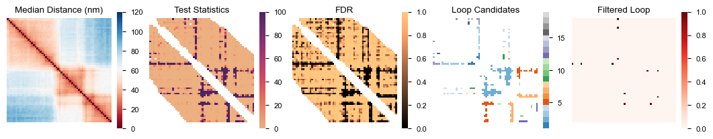
[9]:
adata_endo = adata[adata.obs["cell_type"] == "Endo"]
adata_astro = adata[adata.obs["cell_type"] == "Astro"]
[13]:
from utils.maps import pair_loop_map
diffloop = sf.tl.DiffLoop(adata_astro, oadata)
res = diffloop.diff_loops(loop_df[loop_df["final"]])
df = diffloop.to_bedpe(res, 0.1)
fig = pair_loop_map(adata_astro, oadata, df, "chr3")
fig.suptitle("Astro versus Ex", fontsize=10)
fig.savefig(os.path.join(out_dire, "Astro_Ex_Loop.pdf"), bbox_inches="tight")
Found 0 differential loops, while 6 are not differential loops.
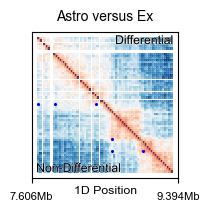
[14]:
df[["c1", "s1", "e1", "c2", "s2", "e2", "fdr"]]
[14]:
| c1 | s1 | e1 | c2 | s2 | e2 | fdr | |
|---|---|---|---|---|---|---|---|
| 0 | chr3 | 7675000 | 7700000 | chr3 | 8475000 | 8500000 | 0.915455 |
| 1 | chr3 | 7875000 | 7900000 | chr3 | 8475000 | 8500000 | 0.915455 |
| 2 | chr3 | 8375000 | 8400000 | chr3 | 8475000 | 8500000 | 0.915455 |
| 3 | chr3 | 8575000 | 8600000 | chr3 | 8900000 | 8925000 | 0.915455 |
| 4 | chr3 | 8575000 | 8600000 | chr3 | 9050000 | 9075000 | 0.915455 |
| 5 | chr3 | 8950000 | 8975000 | chr3 | 9050000 | 9075000 | 0.243232 |
[12]:
diffloop = sf.tl.DiffLoop(adata_endo, oadata)
res = diffloop.diff_loops(loop_df[loop_df["final"]])
df = diffloop.to_bedpe(res, 0.1)
fig = pair_loop_map(adata_endo, oadata, df, "chr3")
fig.suptitle("Endo versus Ex", fontsize=10)
fig.savefig(os.path.join(out_dire, "Endo_Ex_Loop.pdf"), bbox_inches="tight")
Found 4 differential loops, while 2 are not differential loops.
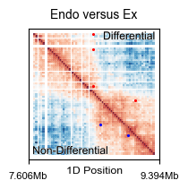
[16]:
df[["c1", "s1", "e1", "c2", "s2", "e2", "fdr"]]
[16]:
| c1 | s1 | e1 | c2 | s2 | e2 | fdr | |
|---|---|---|---|---|---|---|---|
| 0 | chr3 | 7675000 | 7700000 | chr3 | 8475000 | 8500000 | 0.041236 |
| 1 | chr3 | 7875000 | 7900000 | chr3 | 8475000 | 8500000 | 0.000067 |
| 2 | chr3 | 8375000 | 8400000 | chr3 | 8475000 | 8500000 | 0.014833 |
| 3 | chr3 | 8575000 | 8600000 | chr3 | 8900000 | 8925000 | 0.416674 |
| 4 | chr3 | 8575000 | 8600000 | chr3 | 9050000 | 9075000 | 0.037286 |
| 5 | chr3 | 8950000 | 8975000 | chr3 | 9050000 | 9075000 | 0.416674 |
[17]:
diffloop = sf.tl.DiffLoop(adata_astro, oadata)
res = diffloop.diff_loops(loop_df[loop_df["final"]])
df = diffloop.to_bedpe(res, 0.1)
fig = pair_loop_map(adata_endo, oadata, df, "chr3")
fig.savefig(os.path.join(out_dire, "Endo_Astro_Loop.pdf"), bbox_inches="tight")
Found 0 differential loops, while 6 are not differential loops.
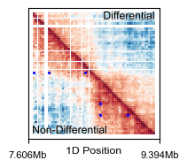
[14]:
rows = []
for chr_id in loader.chr_ids:
adata = loader.create_adata(chr_id)
sf.pp.add_cell_type(adata, celldfs, "Cell_ID", "cluster label")
adata.obs["cell_type"] = adata.obs["cluster label"].map(celltype_dict)
d = Counter(adata.obs["cell_type"])
d["Chrom"] = chr_id
rows.append(d)
df = pd.DataFrame(rows).sort_values("Chrom").set_index("Chrom")
df = df.loc[[f"chr{i}" for i in range(1, 20)]+["chrX"]]
fig, ax = plt.subplots()
ax.axis("off")
ax.table(cellText=df.values, colLabels=df.columns, rowLabels=df.index,
cellLoc="center", loc="center")
ax.set_title("Number of Traces by Cell Types and Chromosomes",
y=1.02, fontsize=10)
out_fname = os.path.join(out_dire, "takei_science_count.pdf")
fig.savefig(out_fname, bbox_inches="tight")
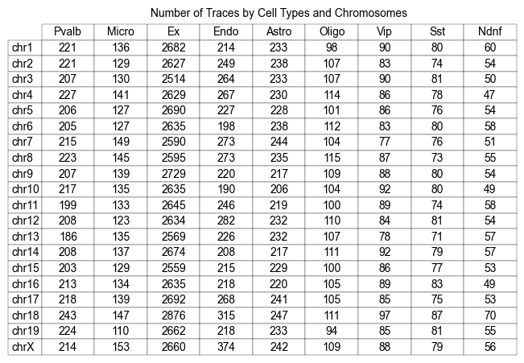
[28]:
df = pd.read_csv(dtree["takei_nature_2021","25Kb","rep1"], skiprows=14)
cols = df.columns.values; cols[0] = "Spot_ID"; cols[-1] = "Extra_Cell_ROI_ID"
df.columns = cols; df = df.iloc[:8,:-1]
fig, ax = plt.subplots(figsize=(10, 3))
ax.table(cellText=df.values, colLabels=df.columns, loc="center", cellLoc="center")
ax.axis("off")
fig.savefig(os.path.join(out_dire, "fof_ct.pdf"), bbox_inches="tight")
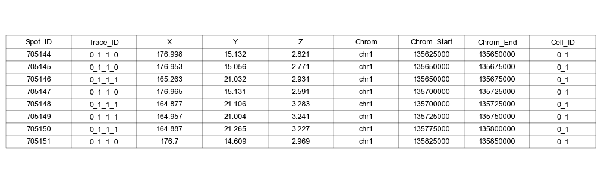
129 and CAST allele#
[4]:
dtree["huang_ng_2021"]
[4]:
{'between': '4DNFI2RCYFJU.csv',
'between_rna': '4DNFI9KE6AII.csv',
'downstream': '4DNFI5Y2PIJM.csv',
'downstream_rna': '4DNFIKPGMZJ8.csv',
'between_mutant': '4DNFIA8DHAFV.csv'}
between and between_rna are the experimental groups. 4 CTCF binding sites are inserted between the Sox2 promoter and the super enhancer in the CAST allele. This should lower the Sox2 expression from CAST allele. between_rna also has Sox2 RNA expression level.
downstream and downstream_rna are the control groups. The CTCF binding sites are inserted downstream of the system instead of between the enhancer and the promoter. We expect no significant difference.
[5]:
loader_ng = sf.pp.FOF_CT_Loader(dtree["huang_ng_2021","between_mutant"])
adatab = loader_ng.create_adata("chr3")
allele = adatab.obs.index.str.replace(r"^\d+_", "", regex=True)
adatab.obs["allele"] = allele
adatab129 = adatab[adatab.obs["allele"] == "129"]
adatabcast = adatab[adatab.obs["allele"] == "CAST"]
sf.pp.axis_weight(adatab, inplace=False)
/Users/redfishhh/Documents/research/MultiplexedFISH/LoopTests/snapfish2/utils/load.py:207: UserWarning: FOF_CT-core data has less columns than what specified in the header. Additional columns will be ignored.
warnings.warn(
[5]:
array([0.35155619, 0.36190932, 0.28653449])
[6]:
adatab
[6]:
AnnData object with n_obs × n_vars = 1318 × 41
obs: 'allele'
var: 'Chrom_Start', 'Chrom_End'
uns: 'Chrom'
layers: 'X', 'Y', 'Z'
[7]:
fig, axes = plt.subplots(1, 2, figsize=(5, 2))
sf.pl.pairwise_heatmap(sf.pp.median_pdist(adatab129, inplace=False), ax=axes[0],
title="129 Allele", vmin=100, vmax=400)
sf.pl.pairwise_heatmap(sf.pp.median_pdist(adatabcast, inplace=False), ax=axes[1],
title="CAST Allele", vmin=100, vmax=400)
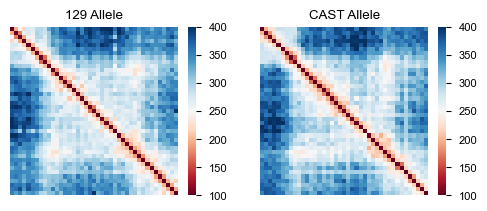
[8]:
caller = sf.tl.LoopCaller()
loop_res = caller.call_loops(adatab)
loop_df = caller.to_bedpe(loop_res, adatab)
loop_df[loop_df["final"]]
[8]:
| c1 | s1 | e1 | c2 | s2 | e2 | stat | pval | fdr | candidate | label | summit | final | |
|---|---|---|---|---|---|---|---|---|---|---|---|---|---|
| 344 | chr3 | 34646078 | 34651078 | chr3 | 34751078 | 34756078 | 7.096426e+11 | 4.485301e-13 | 1.036105e-10 | True | 1.0 | True | True |
[9]:
row = loop_df[loop_df["final"]].iloc[0]
adatab.var[adatab.var["Chrom_Start"].isin([row.s1, row.s2])]
[9]:
| Chrom_Start | Chrom_End | |
|---|---|---|
| locus | ||
| loc9 | 34646078 | 34651078 |
| loc30 | 34751078 | 34756078 |
[10]:
df = caller.to_bedpe(caller.call_loops(adatab129), adatab129)
df[df["summit"]]
/Users/redfishhh/Documents/research/MultiplexedFISH/LoopTests/snapfish2/utils/eval.py:187: ImplicitModificationWarning: Trying to modify attribute `._uns` of view, initializing view as actual.
adata.uns["weight"] = {
[10]:
| c1 | s1 | e1 | c2 | s2 | e2 | stat | pval | fdr | candidate | label | summit | final | |
|---|---|---|---|---|---|---|---|---|---|---|---|---|---|
| 344 | chr3 | 34646078 | 34651078 | chr3 | 34751078 | 34756078 | 7.063764e+11 | 4.505285e-13 | 1.040721e-10 | True | 1.0 | True | True |
[11]:
df = caller.to_bedpe(caller.call_loops(adatabcast), adatabcast)
df[df["summit"]]
/Users/redfishhh/Documents/research/MultiplexedFISH/LoopTests/snapfish2/utils/eval.py:187: ImplicitModificationWarning: Trying to modify attribute `._uns` of view, initializing view as actual.
adata.uns["weight"] = {
[11]:
| c1 | s1 | e1 | c2 | s2 | e2 | stat | pval | fdr | candidate | label | summit | final | |
|---|---|---|---|---|---|---|---|---|---|---|---|---|---|
| 344 | chr3 | 34646078 | 34651078 | chr3 | 34751078 | 34756078 | 6.705034e+11 | 4.747314e-13 | 1.096629e-10 | True | 1.0 | True | True |
[12]:
diffloop = sf.tl.DiffLoop(adatab129, adatabcast)
res = diffloop.diff_loops(loop_df[loop_df["final"]])
df = diffloop.to_bedpe(res, 0.1)
df
Found 1 differential loops, while 0 are not differential loops.
[12]:
| c1 | s1 | e1 | c2 | s2 | e2 | pval | fdr | log_fdr | diff | |
|---|---|---|---|---|---|---|---|---|---|---|
| 0 | chr3 | 34646078 | 34651078 | chr3 | 34751078 | 34756078 | 0.026092 | 0.026092 | -3.646127 | True |
[ ]: